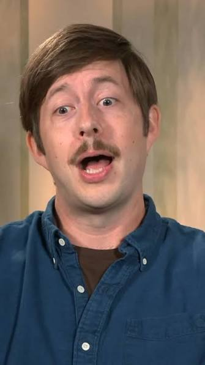
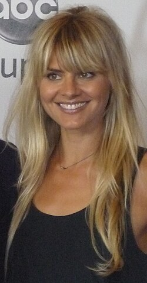
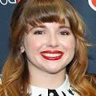

~El Hotel Embrujado ~ Una serie originall de Netfix
NETFLIX
The Undervale (título internacional: El Hotel Embrujado) es una serie de animación para adultos creada por Matt Roller (conocido por su trabajo en Rick y Morty) y producida ejecutivamente por Dan Harmon. La serie se estrenó en Netflix el 19 de septiembre de 2025, y su esperada segunda temporada llegó el 9 de octubre de 2026.
La historia sigue a Katherine, una madre soltera que, tras una racha de mala suerte, descubre que ha heredado el gótico Hotel Undervale en Nueva York, propiedad de su difunto hermano Nathan. Lo que parecía una oportunidad para empezar de nuevo se convierte en una aventura sobrenatural cuando Katherine descubre que Nathan no solo ha muerto... sino que ahora es un fantasma amigable que la ayuda a gestionar el negocio.
El hotel resulta estar situado en una fina línea entre el mundo de los vivos y el Más Allá, por lo que sus huéspedes son una mezcla de humanos despistados, espíritus excéntricos y demonios con problemas burocráticos. Entre el caos del día a día, las travesuras de Nathan y las travesuras de los niños de Katherine, la familia deberá aprender a convivir con lo imposible mientras intenta mantener el hotel a flote... literalmente y metafóricamente.

Matt Roller es un guionista, productor y animador estadounidense, reconocido por su trabajo como escritor y story editor en la exitosa s…mada por la crítica por su equilibrio entre comedia, drama familiar y elementos de terror sobrenatural, convirtiéndose en uno de los estrenos de animación para adultos más destacados de Netflix en 2025-2026.
📚 Ver más información en Wikipedia
El elenco principal de voces que da vida a los personajes de The Undervale.
(Haz clic en cada tarjeta para ver más información)

Personaje: "Katherine" (protagonista)
Actriz y comediante estadounidense conocida por sus papeles en las series Happy Endings y Quantum Leap. Ha participado en películas como Tomorrowland y A Dog's Purpose.

Personaje: "Nathan" (el hermano fantasma)
Actor, comediante y guionista estadounidense, mundialmente famoso por su paso por Saturday Night Live y por protagonizar la película Nebraska, por la que recibió una nominación al Globo de Oro.

Personaje: "Esther" (La hija con conocimientos mágicos)
Actriz y comediante estadounidense, por su estilo de comedia experimental, sus interpretaciones excéntricas y sus trabajos en televisión y animación. Alcanzó reconocimiento por interpretar a Buttercup en la serie animada The Powerpuff Girls y por su espectáculo cómico Nate – A One Man Show, estrenado en Netflix en 2020.

Personaje: "Ben Freeling" (El hijo adolescente)"
Actor estadounidense que comenzó su carrera desde niño. Es conocido por interpretar a Eric Bemis en la serie Santa Clarita Diet, a James Griswold en Vacation y a Howard Stacy en The Amazing Spider-Man y su secuela. También interpreta a Jimmy Olsen en Superman (2025)

Personaje: "Gus" (fantasma bromista)
Actor y comediante estadounidense, conocido por su larga trayectoria en Saturday Night Live y por sus papeles de voz en series animadas.

Personaje: "Lily" (hija de Katherine)
Actriz de doblaje estadounidense, una de las voces más prolíficas de la animación. Ha trabajado en decenas de series, videojuegos y películas animadas.